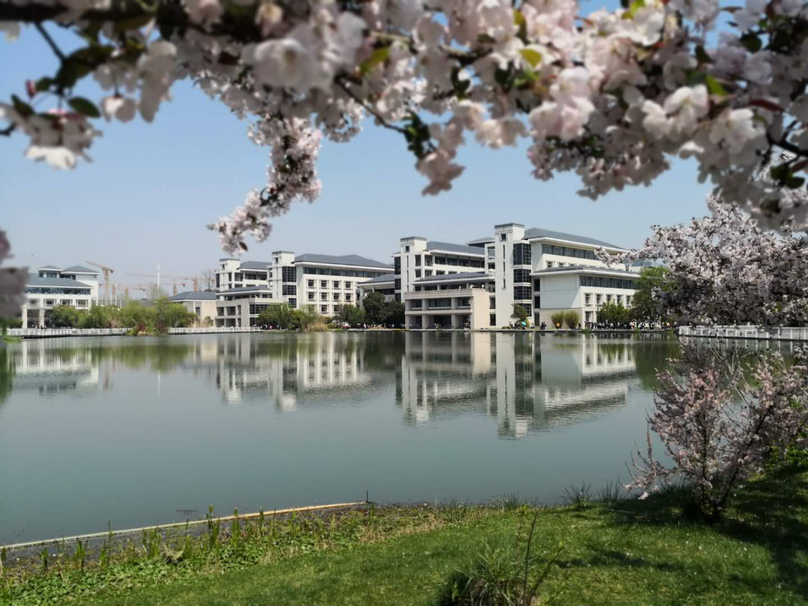
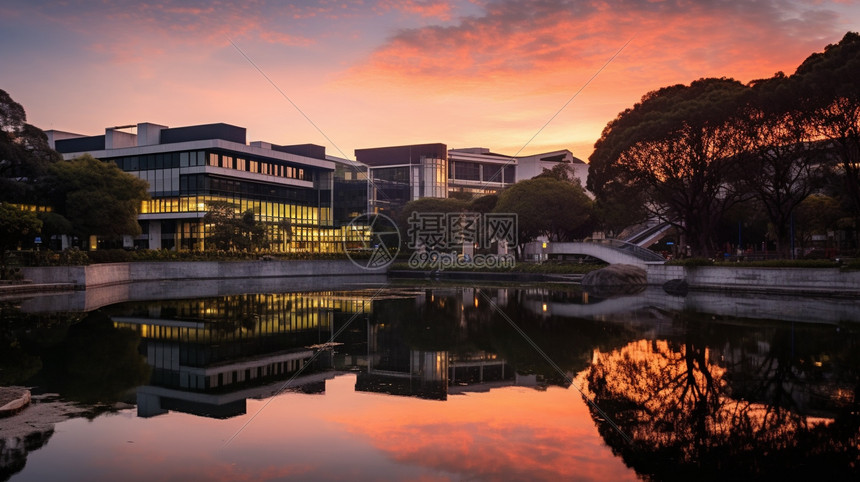
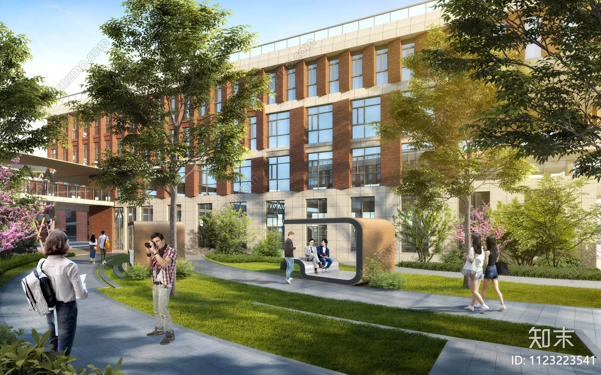

清晨的春华校园，总是被一层轻柔的薄雾笼罩着，像是给整个校园披上了一层朦胧的纱衣。漫步在校园的林荫小道上，微风轻轻拂过脸颊，带着青草与泥土的清新气息，让人瞬间忘却了尘世的喧嚣与浮躁。道路两旁的香樟树郁郁葱葱，枝叶交错在一起，形成了一片天然的绿色长廊，阳光透过枝叶的缝隙洒落下来，在地面上投下斑驳的光影，随着微风轻轻晃动，宛如跳动的音符。校园的中心有一汪清澈的湖水，湖水碧绿如玉，平静如镜，湖边的垂柳垂下柔软的枝条，轻轻触碰着水面，荡起一圈圈细碎的涟漪。湖中的锦鲤悠闲地游弋着，时而浮出水面吐着泡泡，时而潜入水底嬉戏玩耍，为静谧的校园增添了几分灵动与生机。四季更迭，校园的风景也变换着不同的模样，春天繁花似锦，樱花、桃花、玉兰竞相开放，粉的、白的、红的花朵缀满枝头，远远望去宛如一片绚丽的云霞；夏天绿树成荫，蝉鸣声声，浓郁的绿意包裹着整个校园，带来阵阵清凉；秋天层林尽染，银杏叶金黄似蝶，枫叶火红如霞，落叶铺满小径，踩上去沙沙作响，满是诗意；冬天银装素裹，白雪覆盖着楼宇与草木，校园变得圣洁而宁静，每一个季节都有着独一无二的美，让人流连忘返。
校园的自然风光不仅仅是花草树木与湖光山色，更是人与自然和谐共生的美好画卷。在这里，你可以看到清晨在湖边晨读的学子，他们专注的神情与优美的环境融为一体；可以看到午后在草坪上休憩的同学，沐浴着阳光，畅谈着理想与未来；可以看到傍晚在小道上散步的师生，享受着校园独有的宁静与惬意。每一处角落都藏着不经意的美好，每一次呼吸都能感受到自然的馈赠，一砖一瓦皆有情，一草一木皆是景。春华校园用它独有的温柔与美丽，包容着每一位学子，滋养着每一颗年轻的心灵。在这里，我们不仅能收获知识，更能感受自然之美，学会热爱生活、珍惜时光。这片美丽的校园风光，如同一位无声的老师，用它的宁静与美好，洗涤着我们的心灵，让我们在成长的道路上始终保持着一颗纯粹、热爱的心，也成为了我们青春岁月中最珍贵、最难忘的记忆，无论未来走到哪里，这份校园里的自然风光，都会永远镌刻在我们的心底，成为我们最温暖的牵挂。


